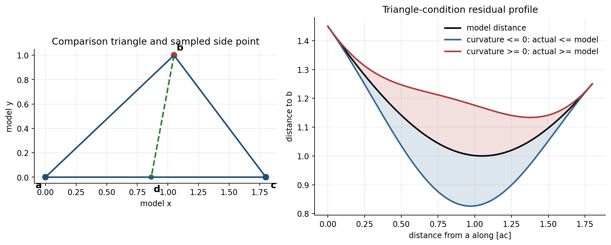
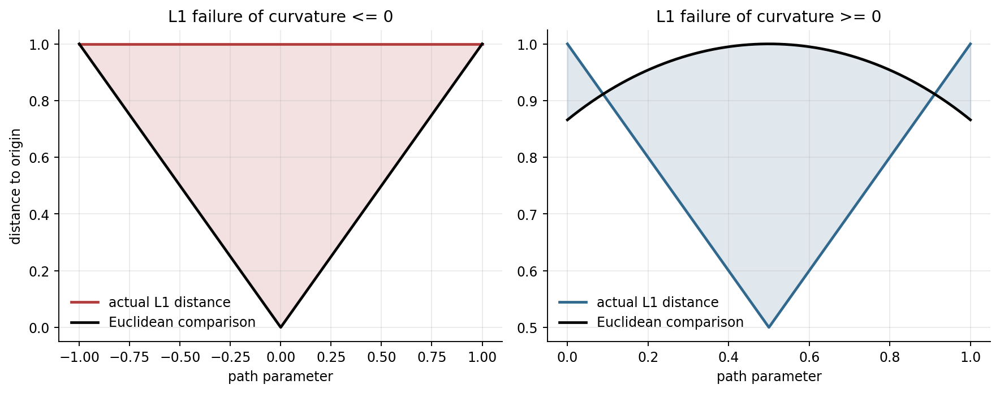
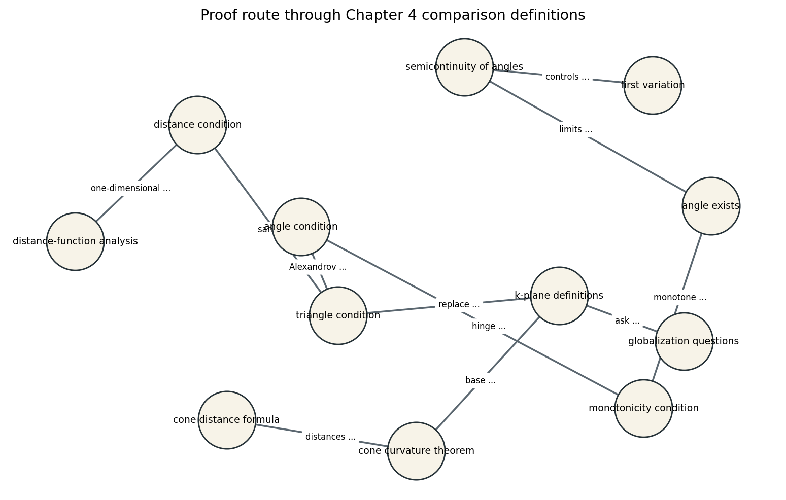
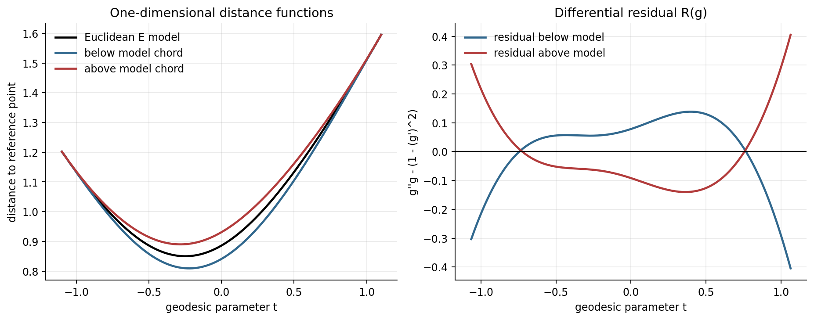
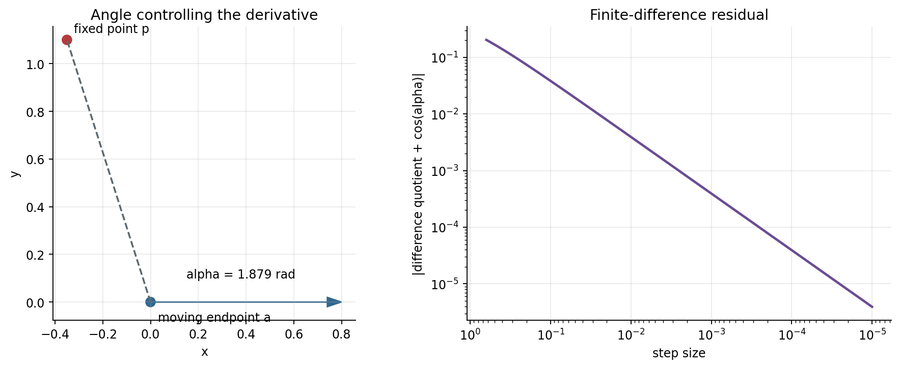
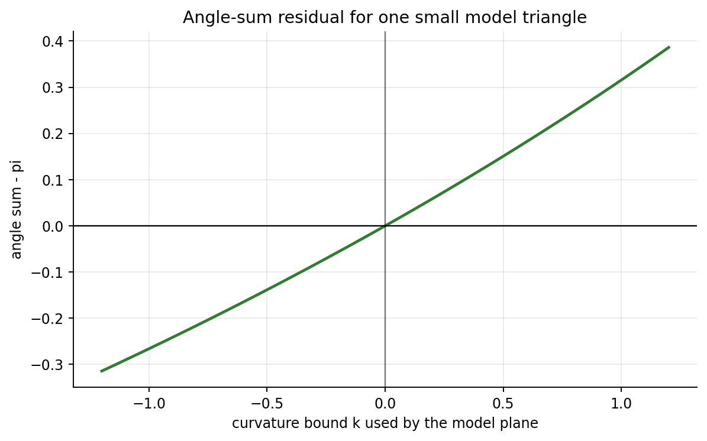
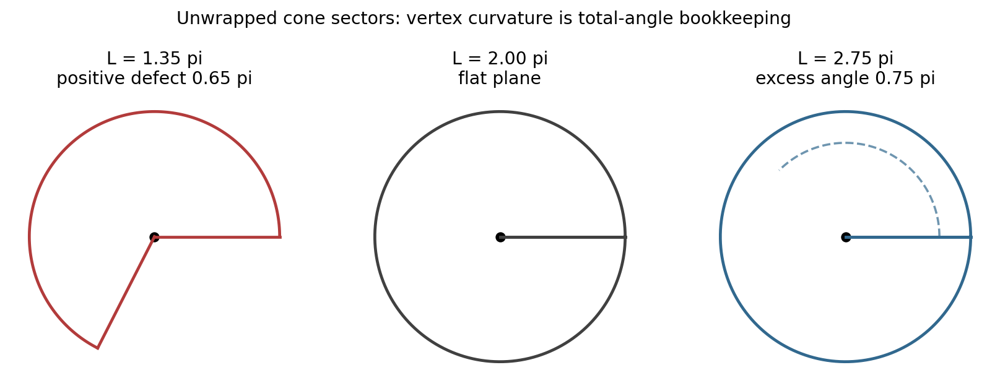

A Course in Metric Geometry, Chapter 04: Spaces of Bounded Curvature
Curvature becomes a comparison experiment: build a model triangle with the same side lengths, then ask whether distances across the original triangle are larger or smaller.
Distances between points and lengths of geodesic segments.
Compare every small triangle with a triangle in a model plane.
Triangles are thinner, fatter, or exactly model-like.
Fans, normed planes, polyhedra, cones, and constant-curvature models.

\(d(p,q)\le d_\kappa(\bar p,\bar q)\)
Geodesic triangles are no thicker than the model. Interior points are at most as far apart as their comparison points.
\(d(p,q)\ge d_\kappa(\bar p,\bar q)\)
Geodesic triangles are no thinner than the model. The comparison inequality reverses direction.
Work where geodesics exist and model comparison triangles are well-defined.
Every small geodesic triangle must satisfy the chosen comparison inequality.
The curvature claim is local until a globalization theorem supplies extra structure.
Local CAT(\(\kappa\)) or local CBB(\(\kappa\)) = comparison holds near each point.
A CAT(0) example need not be a smooth flat surface. What matters is whether every geodesic triangle is at least as thin as its Euclidean comparison triangle.
The fan model lets curvature be checked at the glued spine, where smooth coordinates are unavailable.


For geodesics \(\gamma\) and \(\eta\) from \(p\), compare the small triangle \(p,\gamma(s),\eta(t)\) in the model plane.
\(\angle(\gamma,\eta)=\lim_{s,t\to 0}\widetilde{\angle}_p(\gamma(s),\eta(t))\)
Fix \(a\in X\), move along a geodesic \(\gamma(t)\), and study \(t\mapsto d(a,\gamma(t))\) or \(d(a,\gamma(t))^2\).
Curvature bounds become convexity, concavity, and derivative statements for this one-variable signal.

Distance-squared behaves like a convex function along geodesics, up to a curvature-dependent error term.
f(t)\le (1-t)f(0)+tf(1)+E_\kappa(t)
The analogous comparison can reverse into a concavity-type inequality when triangles are model-thick.
f(t)\ge (1-t)f(0)+tf(1)-E_\kappa(t)
The symbol \(E_\kappa\) is the bookkeeping device: it reminds us that nonzero curvature changes the straight-line convexity rule.
\(\displaystyle \frac{d}{dt}\Big|_{t=0+} d(a,\gamma(t))=-\cos\angle_a(\gamma,a)\)
The formula says that a distance sensor has a one-sided derivative determined by the comparison angle at the base. It is the nonsmooth analogue of the Riemannian first variation calculation.
Sample \(d(a,\gamma(t))\) at small \(t\), estimate the right derivative, and compare the residual with \(-\cos\theta\).
A small residual does not prove the theorem, but it confirms that the model and the computation are speaking the same language.


Curvature bounds begin as small-triangle statements, but major geometric consequences require extending those inequalities across the space.
Do not silently replace local CAT or CBB by global CAT or CBB. The chapter's globalization results explain exactly when that leap is justified.
